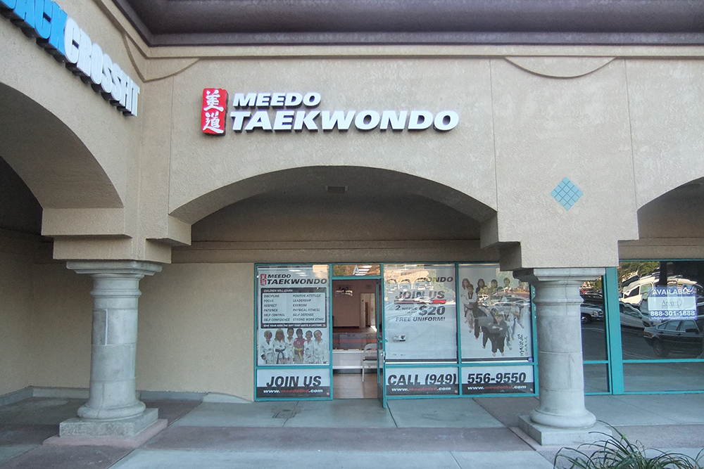
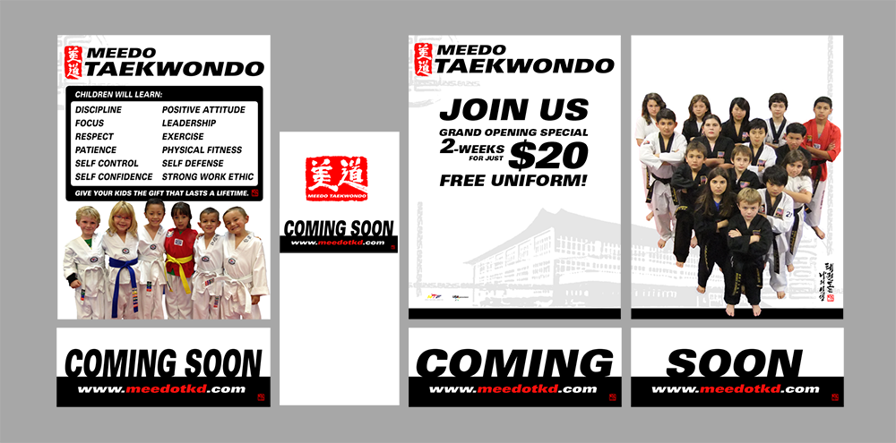

Recognizable identity
The expressive red mark provides a consistent anchor across different formats.
Meedo Taekwondo / Brand identity
A studio brand brought to life through a distinctive mark, storefront signage, and promotional graphics.
01 / Context
Alongside my design career, I owned and operated a taekwondo studio. I handled the design for the studio and its brand, connecting my interest in martial arts with my graphic design practice.
The visual direction pairs a traditional, brush-style mark with bold contemporary typography—bringing the heritage of martial arts into a modern studio identity.
02 / In the real world
The identity extends from the logo into exterior signage and coordinated window graphics.

Archived studio photograph. Offers and contact information shown are historical.
03 / Graphic applications
The window graphics use a repeated logo, a red–black–white palette, and bold typographic hierarchy to connect studio information with promotional messages.

The expressive red mark provides a consistent anchor across different formats.
Large headlines separate the main message from supporting details.
Signage and promotional panels share the same core visual language.
04 / My contribution
I developed the studio identity and designed its graphic applications, including the logo, print graphics, and promotional materials shown here.
This project brings together visual identity, typography, and real-world production—a different application of the same consistency and clarity I bring to interface design.